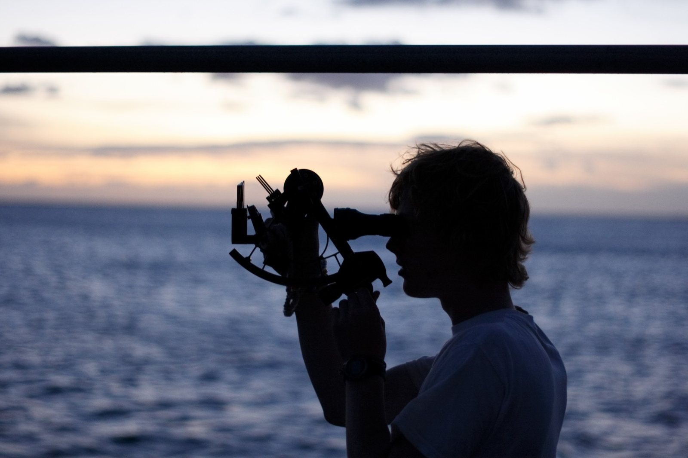

Celestial Navigation
How to use a sextant and the stars to figure out where you are on the Earth
Part oneThe fundamentals
1.0A star has a ground position and altitude
Imagine that you are standing at the center of a transparent Earth looking outward at the stars. If you pointed a laser at a star, your ray would draw a straight line that passes through the surface of the Earth at a single point. That point is called the star’s ground position, or GP for short.
Now let’s imagine that you traveled up that laser beam’s path to the star’s ground position on the Earth’s surface. Where would you expect the star to be found? You would find it directly overhead. This means that if you planted a flagpole at that spot, it would point right at the star.
You can describe this star’s position in the sky with an angle. If looking level out at the horizon is 0°, then the flagpole is at a right angle to the horizon and points at 90°. This angle from the horizon to the direction of the star is called a star’s altitude.
2.0Finding your position by measuring a star’s altitude
How does this fact help us use the stars to find out where on Earth we’re located? One way to find your location would be to find a star that’s directly above you (90°), reference that star’s ground position in a book, and say that you are at the same location as the star’s known ground position.
But what if you don’t happen to be standing right on the ground position of a star? You’re still in luck, so long as you can precisely measure the star’s altitude. Let’s explore how a star’s altitude relates to how close you are to its ground position.
Imagine once again that you’re standing on a star’s ground position and pointing straight up. This means that the star is 90° overhead. But what happens as you move away from the ground position? From your perspective, the horizon will always remain as a reference at 0° as you move, and you’ll keep pointing directly overhead at 90°. But because the Earth is round, the direction that you’re pointing in the sky will shift as your position changes. From an outside view, the direction you’re pointing overhead when at the North Pole will be completely different to the direction at the equator.
As you move on the round globe, it will seem as if the positions of the stars are moving. Let’s return to our original example. You start on the ground position of a star and then move away. As you do so, the star’s altitude will fall a little closer to the horizon. The star will continue to move lower in the sky until it disappears beyond the horizon.
You might wonder why the line extending from you to the star runs parallel to the line through the GP. If both point at the same star, shouldn’t they lean toward each other and meet there? They do meet, but only at the star, and stars are almost unfathomably far away. As the distance to the point increases, the line aimed at the star from anywhere on the earth points in the same direction.
It’s important to note that the altitude of the star is directly related to how far you’ve moved away from its ground position. You’ll notice that the star is directly overhead (90°) at the ground position, and then it falls lower in the sky as you move away. Travel 30° from the ground position, and the star’s altitude will be 60°. Travel 70°, and the altitude will now be 20°. This continues until you’ve traveled 90° away from your starting position, where the star will be found right on the horizon (0°).
This observation is the heart of celestial navigation. If you measure the altitude of a star, it tells you how many degrees from the star’s GP you have traveled. Your distance from the GP is given by a simple rule:
2.1An example: Polaris
Let’s see how this works using the North Star (Polaris). The ground position of Polaris sits almost exactly at the location of the North Pole. If you stand at the North Pole, you’ll find Polaris directly overhead. As you travel away, you’ll notice that the star moves lower in the sky. This continues until you reach the equator, where the star will be on the horizon. By measuring the altitude of Polaris, you are able to know how far you are from the equator. This is called your “latitude.”
3.0Rings of position
You now know that measuring the altitude of a star tells you how far away you are from the star’s ground position. But it doesn’t tell you which direction. Suppose you measure the altitude of a star at 60°. That puts you 30° from its ground position (90° − 60°). In two dimensions, you could either be 30° to the left of the GP or 30° to the right.
In three dimensions, there are even more positions where you can see the star at the same altitude. You can move 30° east or west of the star’s ground position, but you can also move 30° north, 30° south, 30° southeast and so on. It turns out that there’s a full ring of positions where the star will appear to be at the same altitude above the horizon.
3.1Two rings identify a location
If measuring the altitude of a star gives a full ring of valid positions, how are we going to use the stars to find our position on the globe? There’s a trick! We can measure the altitude of more than one star, each of which gives an independent ring of possible positions. The points at which these circles intersect give your location as they represent the only places where you could view both stars at their measured altitudes.
Let’s give this a try with two stars:
- Measure the altitude of your first star. We’ll use “Vega” in this example. Suppose that it’s 60° above the horizon. This means that you are 30° from Vega’s ground position.
- Mark the ring of positions given by Vega by measuring 30° from its GP and tracing a circle.
- Measure the altitude of star two, “Sirius” in this case. Suppose it’s 40° above the horizon.
- Trace a circle with a radius of 50° around Sirius’s ground position.
These two locations of intersection are often quite far from one another. In most cases, you can simply rule out one of the two possibilities because it’s so far away from your estimated position. Or, you can measure the altitude of a third star and draw another ring of position. These three rings will intersect at only a single point, and that represents your location.
4.0How to measure angles precisely
We now understand how measuring a star’s altitude above the horizon will enable you to determine your location. It’s essential to do this very precisely and accurately. If your measurement of a star’s altitude is off by only a half degree, your position will be off by about 30 miles!
How might we do this? You could imagine a system on land where a telescope is mounted on a level stand, and the angle that the scope points is marked along an arc. You could look through the telescope and center the star in view, and then mark the angle between the flat ground and the telescope. This angle gives the star’s altitude.
This works on land, but celestial navigation was primarily developed to navigate at sea. Here, you need to measure this angle from a boat that’s rocking on the waves. If you simply mounted a telescope to the deck, the angle between the deck and the star would constantly be changing as waves jostle the boat. You need to measure the angle between a fixed landmark and the star. In this case, the horizon works well as a stable and level reference.
4.1The sextant
A sextant has been designed for exactly this purpose. A sextant is a telescope of a sort, but it looks at a mirror rather than directly at the sky. Instead of changing the angle of the telescope, you move and measure the angle of the mirror. But this mirror only covers half of the eyepiece. The other half is unobstructed, with the same straight view of a standard telescope. When the sextant mirror is set to 0°, both views look at the same spot. But when the mirror is tilted, the view on one half is deflected.
How does this help us make a measurement of a star’s altitude? The innovation here is that the two views allow us to precisely measure the angles between two objects. You can point one view at the horizon, and deflect the mirror until the star comes into view and settles at the exact same height as the horizon line on the other half. The angle of the mirror now corresponds to the angle between the horizon and the star. Because the star and the horizon are in the same view, they rock together with the boat and the angle between them remains steady.
5.0Now you know the fundamentals
This is all that you need to conceptually understand the entire system. Measure the altitude of two or three stars with a sextant, look up where each star’s GP was at the moment of measurement, draw the circles, and find where the circles cross.
The next sections will go into some of the additional pieces of celestial navigation that are needed in practice.
Part twoThe full picture
6.0The stars move!
All of our previous explanations made the simplifying assumption that a star’s ground position is one fixed location on the Earth. However, this is not the case. The locations of the stars are fixed in the sky, but the Earth rotates. This means that the ground position of a star will move to the west on the globe. The ground position moves by about one mile every four seconds for a star near the equator. Because the Earth rotates on an axis, a star’s latitude remains constant.
In practice, drawing a circle of position requires that you are able to look up the ground position of the star at a given time, and that you record the exact time that you took the sight. This dependence on time is why the development of celestial navigation required accurate timekeeping. I’d highly recommend reading the book “Longitude.” It tells the story of the Longitude Prize and John Harrison’s development of a clock that could keep accurate time while at sea.
7.0How do you look up stellar ground positions?
Given that the ground position of a star is constantly changing, consider for a moment what a book listing the positions would look like. It would list ground positions for hundreds of stars at every hour of the day across a year. This would add up to thousands of printed pages. We need a more efficient way to go about representing this information.
It turns out that all the stars move at the same rate. The stars are fixed in the sky while Earth rotates. If the ground position of one star moves west by 10°, the ground positions of all the other stars will move by 10° to the west as well. So the book only needs to track a single point in the sky over time, and list a fixed offset for each star of interest.
Astronomers and navigators settled on using a point in the sky called the First Point of Aries, or just Aries, as this reference. Aries isn’t a star. It is the place in the sky where the Sun sits at the March equinox, when the Sun’s ground position crosses the equator heading north. The Nautical Almanac lists the position of Aries each hour of the day across a year, along with a table of offsets for 57 stars of interest. You mark the time of day for your sight, look up the position of Aries at that time, and then add the offset for your star of interest to find the longitude of your star’s ground position. Latitude is simply listed in the book, as it barely changes over months.
8.0A worked example
Let’s find a position from start to finish. It’s 05:16:24 UTC on 19 August 2026, and you’re sailing somewhere in the Pacific. You measure two stars, Vega and Arcturus. Follow along in the figure, one step at a time.
Measure the stars
Start with Vega. Drag the sextant’s arm until Vega shows in the eyepiece, then drag in the eyepiece to set it exactly on the horizon. Press Take sight to record the altitude on the scale, then do the same for Arcturus.
| Line | Vega | Arcturus | ||
|---|---|---|---|---|
| 01 | Altitude | 42°30.1′ | 37°05.3′ | |
| 02 | Time, UTC | 05:16:24 | ||
| 03 | Date | 19 Aug 2026 | ||
Find Aries
The almanac lists where Aries is at the start of each hour. Look up 05:00 on 19 August, then add how far Aries moves in the extra 16 minutes and 24 seconds, from a table in the back of the book.
| 01 | Aries at 05:00 | 42°34.0′W | |
|---|---|---|---|
| 02 | Movement in 16 min 24 s | + | 4°06.7′ |
| 03 | Aries at 05:16:24 | = | 46°40.7′W |
Find each star’s ground position
Add each star’s offset to Aries to get the longitude of its ground position. The almanac also lists each star’s latitude.
| Line | Vega | Arcturus | ||
|---|---|---|---|---|
| 01 | Aries | 46°40.7′W | 46°40.7′W | |
| 02 | Offset from Aries | + | 80°32.1′ | 145°46.8′ |
| 03 | Longitude | = | 127°12.8′W | 192°27.5′W |
| 04 | Wrapped to east | 167°32.5′E | ||
| 05 | Latitude | 38°48.6′N | 19°02.8′N | |
Arcturus comes out more than 180° west, so it wraps around to the east: 360° − 192° 27.5′ = 167° 32.5′ E. Vega’s ground position is off California, and Arcturus’s is near Wake Island.
Draw Vega’s ring
The ring’s radius is 90° minus the star’s altitude. Draw it around Vega’s ground position. You’re somewhere on this ring.
| 01 | Overhead | 90°00.0′ | |
|---|---|---|---|
| 02 | Altitude | − | 42°30.1′ |
| 03 | Radius | = | 47°29.9′ |
Draw Arcturus’s ring
Do the same for Arcturus.
| 01 | Overhead | 90°00.0′ | |
|---|---|---|---|
| 02 | Altitude | − | 37°05.3′ |
| 03 | Radius | = | 52°54.7′ |
| 04 | Your latitude | 5°44.6′S | |
| 05 | Your longitude | 144°59.0′W |
The two rings cross at two points. One is in the Arctic, thousands of miles from where you could be, so you can rule it out. The other is your fix: 5° 44.6′ S, 144° 59.0′ W, in the Pacific northwest of the Marquesas Islands.
Your sights were off, so this fix is a few nautical miles from where you really are. Each minute of error in an altitude moves its ring by about one nautical mile. Go back to step 1 to take them again.
9.0Conclusion
As you can imagine, there are a number of additional tools and complexities when navigating at sea. For example, a “noon sight” that uses the sun, the “intercept method” that makes finding your intersection point more tractable on a map, or corrections to your sights based on atmospheric refraction and your deck height. I’ve also used common terms for many of the concepts in this article so you can understand them intuitively. There’s a full dictionary of celestial navigation with terms for angles like Ho, Hc, Zn and AP that would be used in reality.
Celestial navigation is a beautiful system with a basis in finding the ground positions of stars, making circles of position based on the angle from you to the star, and identifying the intersection of those circles to find your location. I hope this has helped give you an intuitive understanding of how it works.
